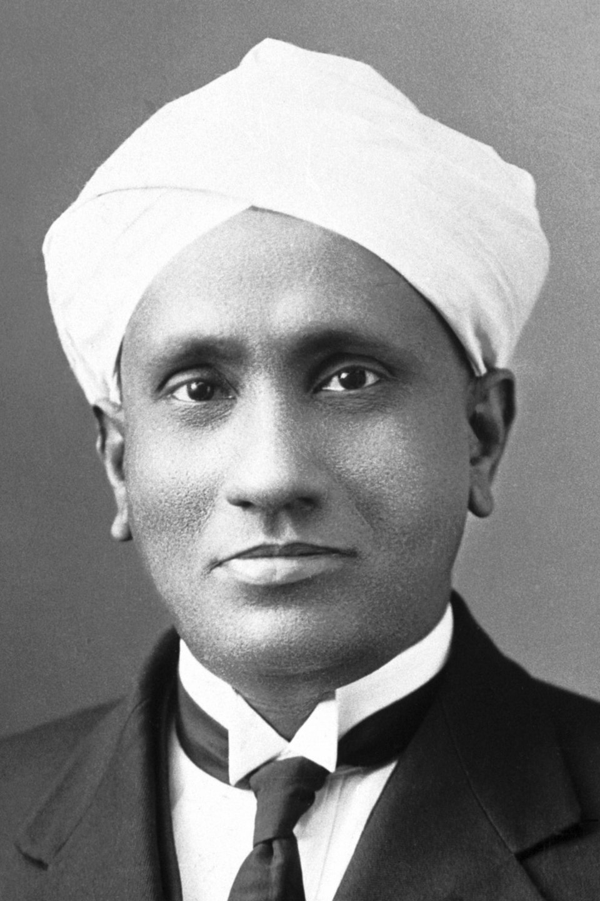
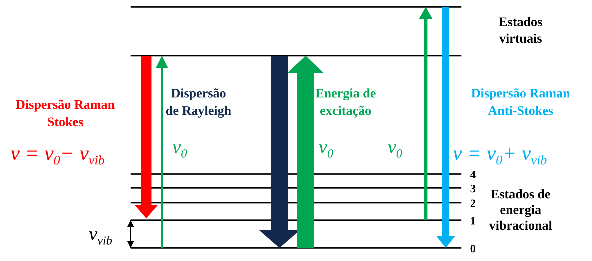
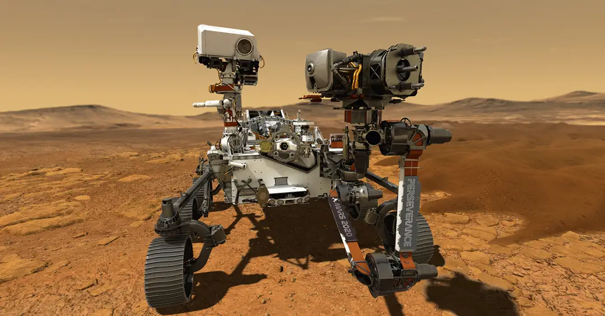

História e Evolução da Espectroscopia Raman
A Espectroscopia Raman é uma das ferramentas analíticas mais poderosas da ciência moderna, permitindo a identificação da "assinatura molecular" de materiais sem a necessidade de contato físico ou destruição da amostra. Sua história é um testemunho da evolução da física quântica e do aprimoramento tecnológico — e, como muitas descobertas científicas, envolveu mais atores do que costuma ser lembrado.

A Descoberta Fundamental por Venkata Raman
A história começa oficialmente em 28 de fevereiro de 1928, na Índia. O físico Sir Chandrasekhara Venkata Raman, intrigado pela cor azul profunda do Mar Mediterrâneo, questionou a explicação de Lord Rayleigh, que atribuía a cor apenas ao reflexo do céu.
Raman, junto com seu colaborador K. S. Krishnan, utilizou a luz solar focada e filtros simples para observar que, quando a luz atravessava um líquido, uma fração minúscula dessa luz emergia com uma cor diferente da original. Esta descoberta, que provou a natureza inelástica do espalhamento da luz, rendeu a Raman o Prêmio Nobel de Física em 1930, tornando-o o primeiro asiático a receber um Nobel em ciências.
Cinco anos antes da confirmação experimental, o físico austríaco Adolf Smekal já havia previsto teoricamente a possibilidade desse tipo de espalhamento inelástico da luz por moléculas. A observação de Raman e Krishnan confirmou experimentalmente essa previsão.
Um fato pouco divulgado é que, quase simultaneamente, os físicos soviéticos Grigory Landsberg e Leonid Mandelstam observaram um fenômeno equivalente em cristais de quartzo, na Universidade Estadual de Moscou. Registros históricos indicam que eles capturaram o primeiro espectro do efeito em 21 ou 23 de fevereiro de 1928 — dias antes de Raman —, mas apresentaram os resultados apenas em um colóquio em abril e só os publicaram em julho daquele ano, depois que Raman já havia divulgado os seus.
Por causa desse atraso na publicação, o crédito histórico e o Nobel de 1930 ficaram com Raman. Ainda assim, muitos físicos austríacos, alemães e russos da época consideraram que o crédito deveria ser compartilhado, e por um tempo o fenômeno foi chamado de "espalhamento combinacional" ou "efeito Smekal-Mandelstam-Raman" em parte da literatura europeia.
O Espalhamento Inelástico
O fenômeno, conhecido como Efeito Raman, baseia-se na interação entre fótons (partículas de luz) e as vibrações das moléculas de uma amostra. Para entender esse processo, é preciso considerar dois tipos de "degraus" de energia que a molécula pode ocupar: os estados de energia vibracional — níveis reais e quantizados, numerados v = 0, 1, 2, 3… — e os chamados estados virtuais, níveis instáveis e de duração extremamente curta, criados momentaneamente quando a luz incide sobre a molécula.
À temperatura ambiente, a maior parte das moléculas de uma amostra encontra-se no estado vibracional fundamental (v = 0). Quando um fóton de excitação atinge a molécula, ele a eleva temporariamente a um desses estados virtuais instáveis, que existem por um tempo extremamente curto antes que a molécula retorne a um estado vibracional real, emitindo um novo fóton nesse processo. É justamente para qual estado vibracional a molécula retorna que definirá o tipo de espalhamento.

- Espalhamento Rayleigh (Elástico): a molécula retorna exatamente ao mesmo nível vibracional de onde partiu. O fóton emitido tem, portanto, a mesma energia do incidente. É o processo mais provável e responde pela maior parte da luz espalhada.
- Espalhamento Raman Stokes: a molécula não retorna ao estado inicial, mas sim a um nível vibracional mais alto. Parte da energia do fóton fica retida na molécula na forma de vibração, e o fóton espalhado emerge com energia menor.
- Espalhamento Raman Anti-Stokes: ocorre quando a molécula já se encontrava em um estado vibracional excitado antes de interagir com a luz e retorna ao estado fundamental após a interação. Nesse caso, a molécula cede energia extra ao fóton espalhado, que emerge com energia maior. Esse sinal é normalmente mais fraco que o Stokes, porque, em temperatura ambiente, poucas moléculas partem de níveis vibracionais já excitados — a maioria está no estado fundamental.
- Assinatura Molecular: Como cada molécula vibra de forma única, a mudança na energia da luz funciona como uma "impressão digital" química, permitindo identificar substâncias com alta especificidade.
Na década de 1930, o físico tcheco George Placzek desenvolveu boa parte do formalismo da teoria quântica da polarizabilidade que hoje sustenta a interpretação moderna do efeito Raman, complementando a compreensão puramente experimental inicial.
Aprimoramento de Equipamentos
Apesar da descoberta brilhante, a espectroscopia Raman enfrentou décadas de dificuldades técnicas devido à extrema fraqueza do sinal, já que a luz espalhada de forma inelástica é muito tênue.
Anos 20
Previsão teórica (Smekal, 1923)
O físico austríaco Adolf Smekal previu teoricamente o espalhamento inelástico da luz cinco anos antes de sua confirmação experimental.
1930-50
Lâmpadas de mercúrio e placas fotográficas
As análises levavam horas ou dias para produzir um único espectro.
Anos 60
Invenção do laser
O laser forneceu uma fonte de luz monocromática intensa, tornando o efeito Raman muito mais fácil de detectar.
Anos 80
Espectroscopia Raman por Transformada de Fourier (FT-Raman)
O uso de lasers no infravermelho próximo reduziu drasticamente o problema da fluorescência, que antes mascarava o sinal Raman em muitas amostras.
1980-90
Detectores CCD e filtros notch
A sensibilidade aumentou drasticamente, permitindo a análise de amostras biológicas e minerais.
Anos 90-Hoje
Microscopia Raman e equipamentos portáteis
A técnica passou a ser usada em campo, como na identificação de explosivos e em missões espaciais.
Avanços Modernos e Aplicações
Hoje, a técnica evoluiu para variações altamente sensíveis, como o SERS (Surface-Enhanced Raman Spectroscopy), que utiliza nanopartículas metálicas para amplificar o sinal em bilhões de vezes, permitindo detectar, em condições ideais, uma única molécula. Outra variante é a Espectroscopia Raman de Ressonância, que aumenta drasticamente a sensibilidade quando o comprimento de onda do laser coincide com uma transição eletrônica da molécula analisada (um cromóforo), sendo muito usada no estudo de pigmentos, proteínas e outros compostos biológicos.

Atualmente, ela é indispensável em áreas como:
- Farmacêutica: Controle de qualidade de medicamentos.
- Arqueologia: Identificação de pigmentos em obras de arte sem danificá-las.
- Medicina: Diagnóstico precoce de câncer através da análise de tecidos.
- Exploração Espacial: Os instrumentos SHERLOC e SuperCam, a bordo do rover Perseverance da Nasa, utilizam espectroscopia Raman para buscar sinais de vida antiga em Marte.